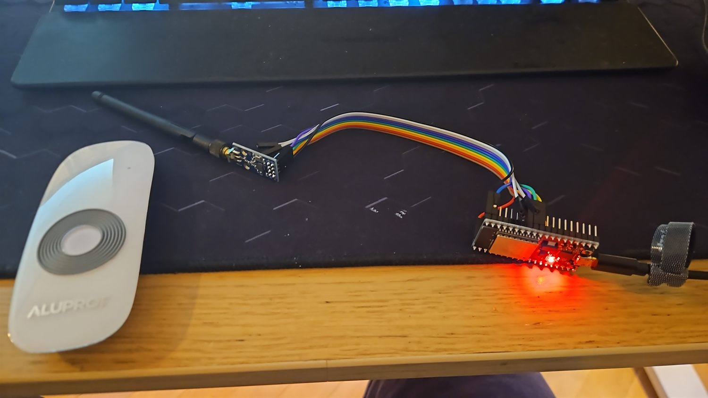

Aluprof žaluzie do Home Assistant
Vlastní RF most z ESP32 + CC1101 místo originálního mostu
Venkovní žaluzie Aluprof jezdí na motoru Dooya po 433 MHz a oficiální cesta do Home Assistantu prakticky neexistuje. Tady je, jak jsem si je rozjel přes vlastní ESP32 s čipem CC1101 — odposlech RF protokolu, ESPHome konfigurace a tři automatizace, které mi reálně šetří klimatizaci. Píšu to schválně podrobně, protože tohle řeší spousta lidí v Česku úplně stejně.
Problém: žaluzie, co „neumí“ do HA
Mám venkovní žaluzie Aluprof. Pohon je Dooya (Aluprof ho prodává pod svým jménem) a komunikuje rádiem na 433,92 MHz. K tomu dostanete nástěnný/ruční vysílač a tím to končí — žádné Wi-Fi, žádný Zigbee, žádná oficiální integrace do Home Assistant.
Možností je pár a žádná se mi nelíbila: koupit drahý univerzální RF most, předělat motory, nebo se smířit s tím, že rolety prostě „nejsou chytré“. Klasická situace, do které se v ČR dostane každý druhý majitel Aluprofu. Tak jsem si to postavil sám — plně lokálně, za pár stovek a bez cloudu.
Hardware: ESP32 + CC1101

Reálný setup: ESP32 + CC1101 (s anténou) propojené dupont vodiči — vlevo originální ovladač Aluprof, ze kterého se odposlechl protokolSrdcem je obyčejné ESP32 a k němu RF modul CC1101, který umí vysílat i přijímat na 433 MHz (na rozdíl od levných pevně laděných modulů). Použil jsem modul EBYTE E07-M1101D se SMA anténou. Propojení je přes SPI:
| CC1101 | ESP32 GPIO |
|---|---|
| VCC | 3V3 (NE 5V!) |
| GND | GND |
| SCK | GPIO18 |
| MISO | GPIO19 |
| MOSI | GPIO23 |
| CSN | GPIO5 |
| GDO0 | GPIO13 |
Odposlech protokolu
Tohle je jádro celé věci. Dooya nepoužívá žádný standardní kód, který by ESPHome znal z krabice — je to proprietární protokol. Mimochodem: Aluprof není Somfy ani „Enjoy“ — párování přes tyhle protokoly nikdy nesedlo, právě protože pod kapotou je Dooya.
Postup: přepnout CC1101 do RX režimu, zmáčkat na originálním ovladači nahoru / stop / dolů a z průběhů vytáhnout strukturu rámce:
- Frekvence: 433,92 MHz, modulace OOK/ASK
- Délka kódu: 40 bitů = 24-bit adresa + 8-bit kanál + 4-bit příkaz + 4-bit kontrola
- Příkazy: UP / STOP / DOWN se liší jen v nibble příkazu (u mě 1 / 5 / 3, kde příkaz = kontrola)
- Časování: preamble ~4820 µs, sync ~1470 µs, dlouhý puls ~720 µs / krátký ~360 µs; rámec se opakuje několikrát
ESPHome konfigurace
Dnes je to nejjednodušší přes oficiální cc1101 komponentu v ESPHome (od verze 2026.5) — na capturu remote_receiver s dumpem Dooya, na ovládání remote_transmitter. Cover entitu dělá time_based, která z času jízdy dopočítává polohu 0–100 %:
Všimněte si, že open_duration a close_duration se liší — motor má jiný rozjezd/dojezd nahoru a dolů. Tohle je potřeba opravdu změřit stopkami.
Kalibrace a „komfort“ pozice
U time_based krytu se poloha počítá z času, takže při opakovaném popojíždění se procenta pomalu rozcházejí s realitou (drift). Řešení: has_built_in_endstop: true a občas dojet úplně na doraz (0 nebo 100 %), čímž se počítadlo srovná.
Druhá vychytávka je vlastní komfortní poloha 25 %. Za roletou mám vývod klimatizace, takže žaluzie nikdy nesmí dojet úplně dolů — nechávám ~10 cm mezeru. Místo „zavřít na 0 %“ proto všechny akce volají skript, který jede na set_cover_position: 25.
Tři automatizace, co to dělají užitečným
Samotné ovládání z appky je hezké, ale smysl to dostane až automatizacemi. Obývák je na jih, takže solární zisk je velký a stínění dává smysl:
- Klima + slunce → zastínit: když naskočí klimatizace, žaluzie se stáhnou na komfortní pozici a pomůžou jí chladit.
- Večerní roztažení: když slunce klesne pod 10° (samo se to posouvá podle ročního období), rolety vyjedou nahoru — a protože jedou na doraz, resetuje se tím drift.
- Anti-glare na TV: zapnu televizi a venku svítí slunce z jihu? Žaluzie se přivřou, ať na obrazovce nejsou odlesky. (Lux čidlo z tabletu bylo nestabilní, rozhoduju podle počasí + polohy slunce.)
Bonus: na rolety jsem namapoval i fyzické Zigbee tlačítko (Sonoff SNZB-01P) — krátký stisk dolů, dvojklik stop, dlouhý stisk nahoru. A jeden ESP32 + CC1101 zvládne obsloužit klidně všechny rolety v domě — stačí zachytit kód každé z nich a přidat další cover.
Co to dalo
Venkovní žaluzie Aluprof se chovají v Home Assistantu jako plnohodnotné chytré rolety — posuvník polohy, hlasové ovládání, scény i automatizace — a to celé lokálně, bez cloudu a bez originálního mostu, za cenu jednoho ESP a RF modulu.
Kdybyste řešili to samé (a podle dotazů, co dostávám, vás je dost), nejtěžší část je odposlech protokolu — zbytek je už jen poskládání ESPHome konfigurace. Klidně se ozvěte, rád poradím.